Awards
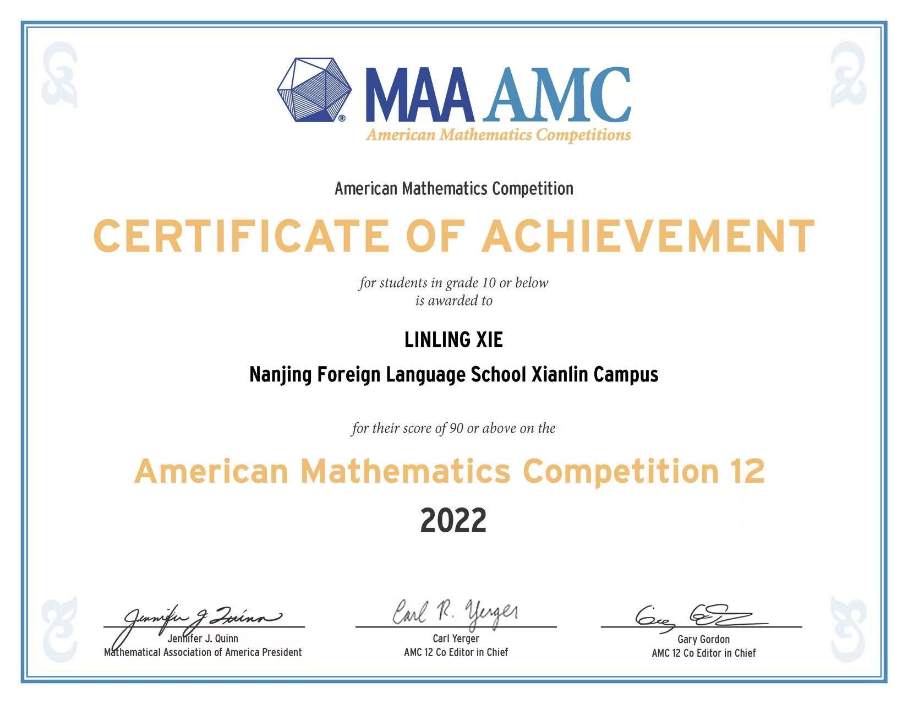
Certificate of Achievement - AMC 12
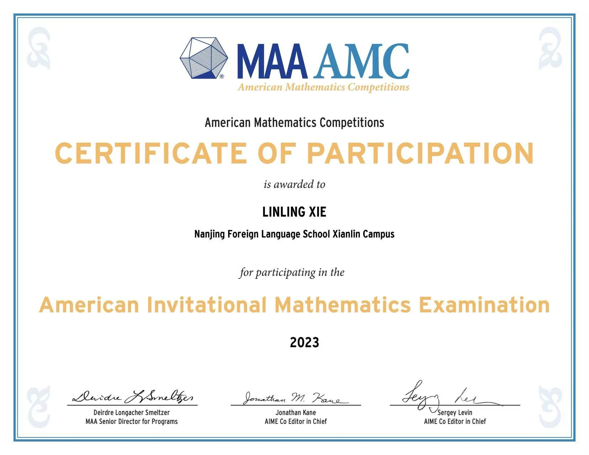
Certificate of Participation - AIME
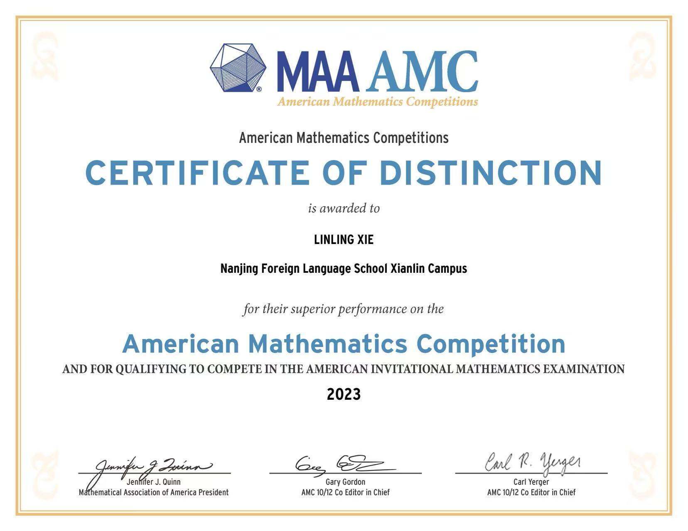
Certificate of Distinction - AMC
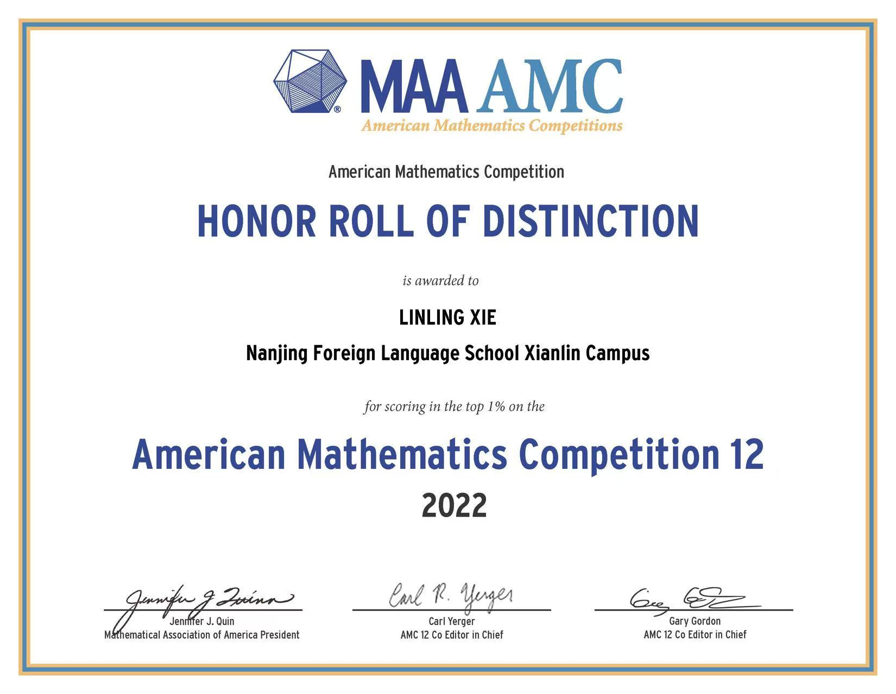
Honor Roll of Distinction - AMC 12
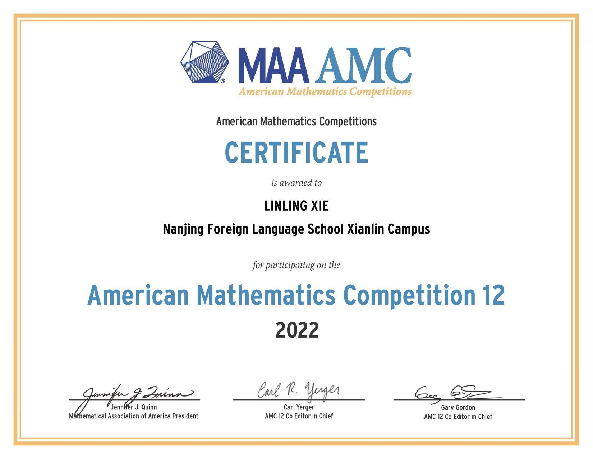
AMC 12 Participation Certificate
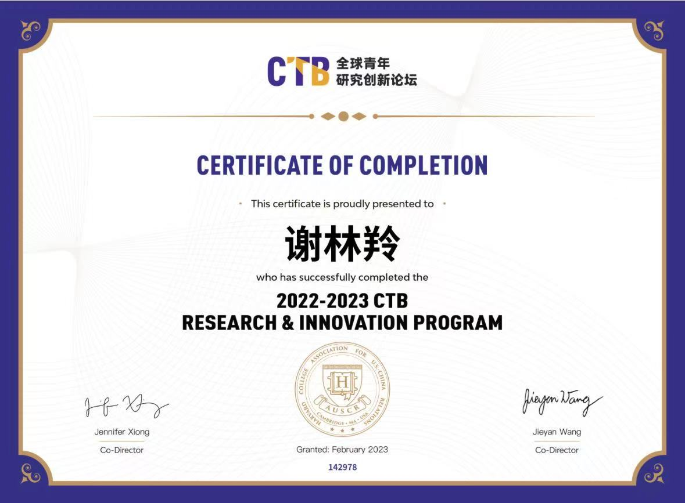
CTB Research & Innovation Program

CTB National Conference Recognition
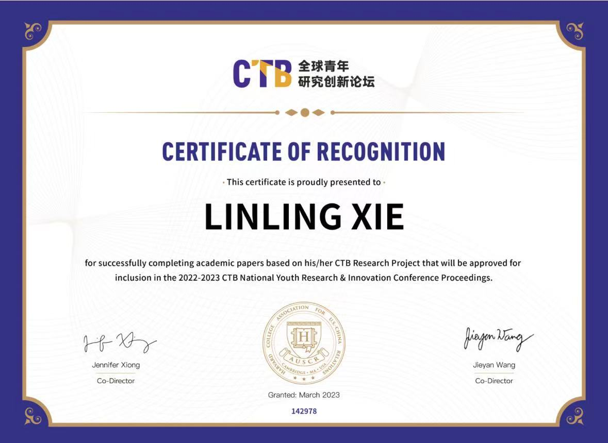
Research Paper Accepted

CTB Digital Library Inclusion
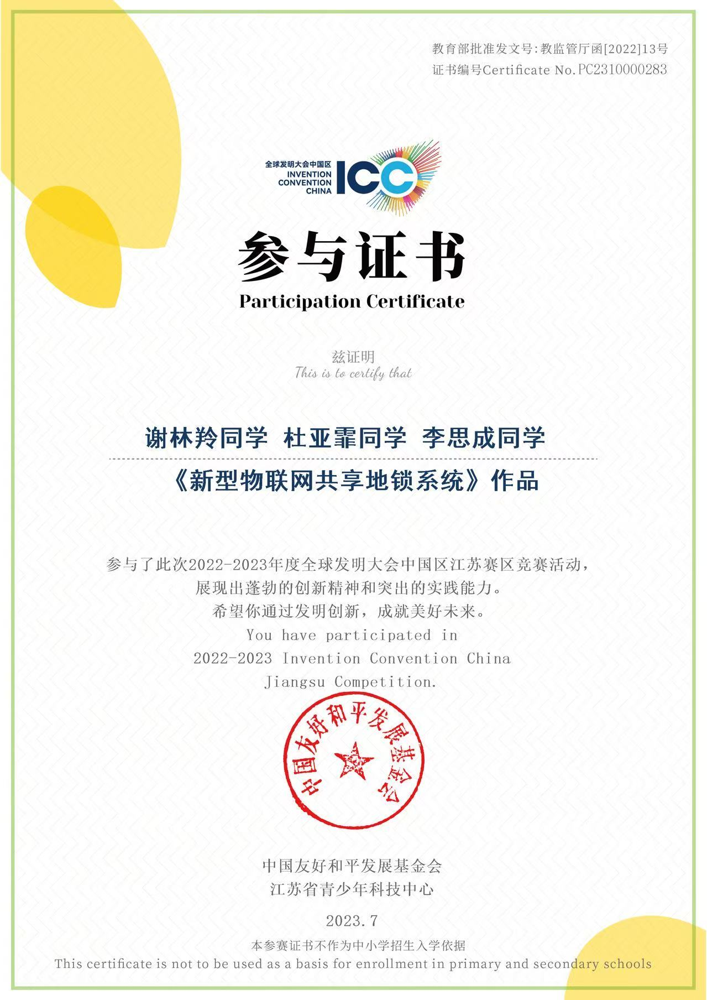
ICC Jiangsu Regional Participant
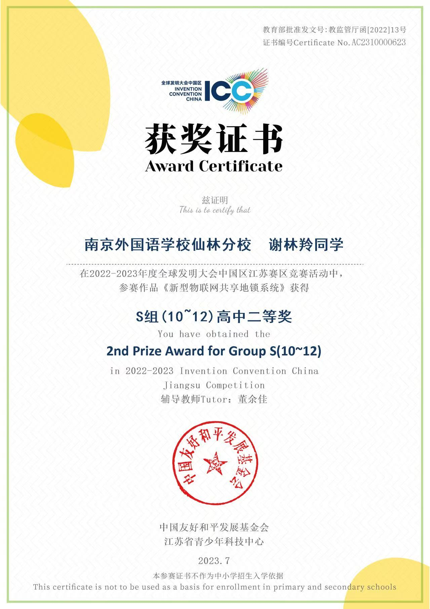
ICC Jiangsu 2nd Prize
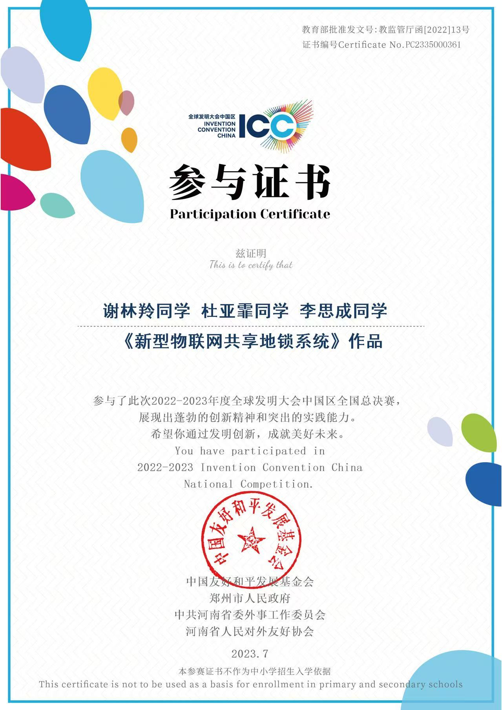
ICC National Finals Participant
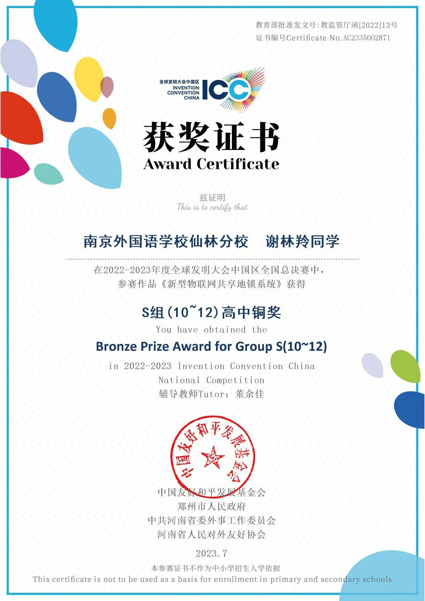
ICC National Bronze Prize
2025 Upper Campus Math Department Winner
As the sole recipient from the 11th grade, I was honored with the Math Department Award at Sierra Canyon School, recognizing my consistent performance, problem-solving excellence, and leadership in mathematical communities.